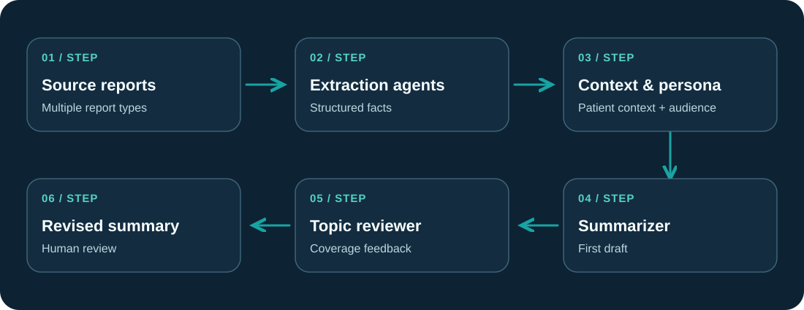
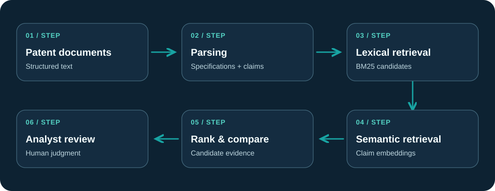
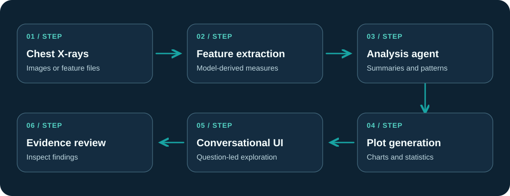
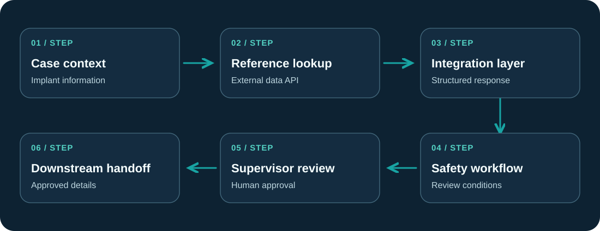

AI Innovation Day
Anchored a global GE HealthCare event, connecting sessions and bringing complex AI developments to a wider audience.
I'm Juhi Joshi, an AI Engineer at GE HealthCare. I work at the intersection of intelligent systems, healthcare workflows, and product thinking—turning technical possibilities into solutions people can understand and use.
Nine project case studies with original architecture diagrams, technical implementation notes, engineering trade-offs and carefully scoped outcomes.

Designing a clinician-oriented AI workflow that turns long, heterogeneous medical records into clearer, audience-aware summaries with structured review.
View engineering case study ↗
Exploring how lexical and semantic search can complement each other when searching long technical documents and precise patent claims.
View engineering case study ↗
A human-in-the-loop document workflow that helps teams organize source evidence, review AI-suggested content, and prepare structured presentation packages.
View engineering case study ↗
Building and exploring reusable infrastructure for running medical imaging models, collecting useful metadata, and examining inference results.
View engineering case study ↗
Exploring how imaging-derived features, plots, and conversational analysis can help researchers investigate collections of chest X-rays.
View engineering case study ↗
Studying parameter-efficient ways to adapt a segmentation model across MRI modalities while preserving what the model has already learned.
View engineering case study ↗
A cross-disciplinary concept for helping elderly people and caregivers coordinate remote health monitoring, support, and access to care.
View engineering case study ↗
Exploring how structured implant information can support the human review of MRI operating conditions.
View engineering case study ↗
A concept for making software dependency vulnerabilities, license considerations, and remediation opportunities easier for engineering teams to understand.
View engineering case study ↗I enjoy both the technical challenge of making AI work and the human challenge of making it useful.
Understand users, workflows, and the constraints that matter before committing to a solution.
Prototype, evaluate, compare alternatives, and make design decisions inspectable.
Communicate across technical and nontechnical teams to turn implementation into shared progress.
From applied AI engineering to presentations and cross-functional initiatives, my work bridges systems and people.
Work on applied AI product workflows, document generation and review, provenance, and quality evaluation.
Model serving and medical-image data workflows; integration and deployment experience.
Information retrieval for patent analysis, combining lexical and semantic search with systematic evaluation.
Agent-based clinical summarization for multiple audiences, including review and refinement workflows.
Medical image segmentation and domain adaptation using MRI datasets and deep learning.
Automation, performance and security testing using Selenium, JMeter and Burp Suite.
Minor specialization: Big Data Analytics.
I care about bringing people along—through clear demonstrations, educational programs, and cross-functional collaboration.
Anchored a global GE HealthCare event, connecting sessions and bringing complex AI developments to a wider audience.
Presented agent-based clinical summarization, explaining the workflow, evaluation approach, and trade-offs.
Co-organized a multi-day interactive PRD learning experience for approximately 80 product managers, using quizzes and role-play activities.
Supported knowledge-sharing, mentoring and cross-functional discussions as part of the Edison Engineering Development Program.
Selected recognitions reported in my professional résumé.
GE HealthCare
GE HealthCare
GE HealthCare
GE HealthCare
My experience includes building AI pipelines and collaborating with teams to translate technical results into actionable decisions.
I'm interested in the intersection of applied AI, healthcare technology, product strategy, and cross-functional innovation. This site highlights selected work and will grow as I add project visuals and verified results.
Explore my work ↑Email me ↗LinkedIn ↗